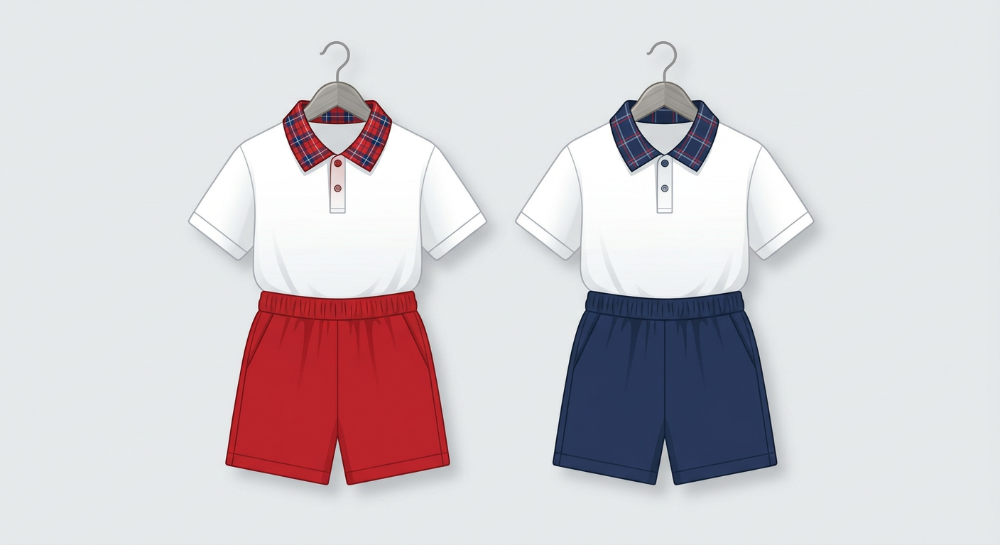
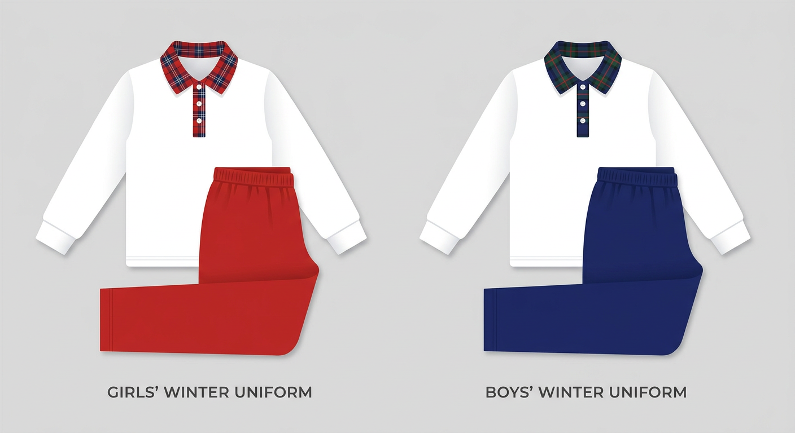

115學年度制服相關公告
臺北市關渡國小學務處為家長整理的新生始業輔導及開學制服採購、平日補購及常見問題 FAQ 完整指南。
最新消息公告
學務處生教組發布之重要常規公告
【服裝規定】全校學生制服改在每週星期二統一穿著
為落實校園服裝儀容整潔，落實生活教育與常規培養，自 115 學年度起全校學生制服改在週二穿著...
【重要】115學年度新生制服開學現場販售及大門口套量時程
學務處公告：本年度新生入學制服於 8/22(六) 及 9/3(四) 於關渡國小大門口現場販售...
校園活動
（欄位保留空白）

115學年度開學制服販售日程 | Purchase Schedule
親愛的家長您好！為協助學生順利備齊制服，學務處已偕同廠商一富有限公司規劃好開學階段大門口現場販售日程。
8 / 22 日 (六) 早上 09:00~11:00
地點：關渡國小大門口
9 / 03 日 (四) 早上 07:30~09:00
地點：關渡國小大門口

夏季制服：短袖上衣與短褲 | Summer Uniform Guide
夏季制服開放現場套量、試穿並現金選購。為落實關渡綠色校園，建議攜帶環保提袋。

冬季制服：長袖上衣與長褲 | Winter Uniform Guide
冬季服裝在販售當天【不提供現貨販售】，採現場登記尺寸填預購單，後續併入三聯單繳費。
學期中平日補購流程 | Regular Reorder Process
若家長錯過以上兩個販售日，或是學期中孩子長高有補購服裝需求，我們已協調廠商利用電話補購，流程與配合方式如下：
🤔 制服怎麼買？看這裡就懂！ | Uniform FAQ
Q1：夏季制服怎麼買？
A：現場選購 ➔ 付現金 💰 ➔ 當場帶回家 🎉（包含：短袖上衣、短褲）
Q2：冬季制服也是現場買嗎？
A：不是喔！冬季制服採預購制 📝。現場僅需填寫預購單，費用之後會跟三聯單一起收取，預計 10/30 前發放（包含：長袖上衣、長褲）。
Q3：那我當天要準備多少錢？
A：家長當天只需要準備夏季制服的現金費用即可！冬季制服的錢之後再跟學校三聯單一起繳就好囉～ 😊
有其他制服或始業輔導疑問？
親愛的家長，若您對於新生始業輔導、夏季制服現場現金購買，或是冬季制服填單預購登記等業務仍有疑問，歡迎隨時透過下方生教組專用管道與我們取得聯繫。